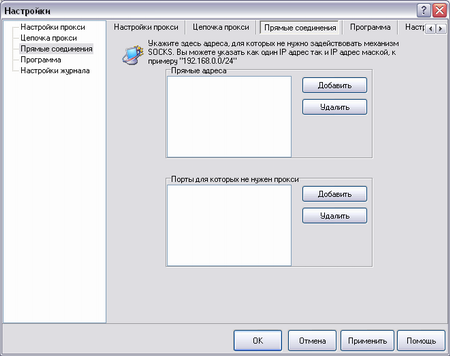
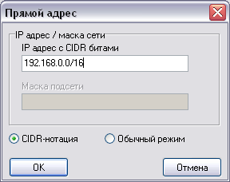
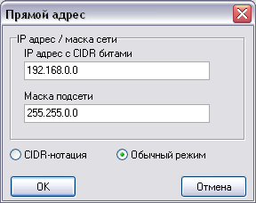

—ид€ в локальной сети и работа€ как с локальными ресурсами, так и с »нтернетом, может оказатс€ полезной следующа€ вкладка:

«десь ¬ы можете перечислить адреса, дл€ которых не следует использовать механизм туннелинга через прокси.
”читыва€ что диапазон локальных адресов может быть большим, ¬ы можете указать его в т.н. CIDR-нотации. “.е. включа€ битовую маску.

Ќапример запись 192.168.0.0/16 означает что дл€ всех адресов c 192.168.0.1 по 192.168.254.254 механизм туннелинга использоватс€ не будет.
„исло "16" означает сколько единичных бит содержитс€ в маске сети и это эквивалентно "255.255.0.0"

ѕроконсультируйтесь со своим системным администратором чтобы узнать какой диапазон адресов принадлежит вашей локальной сети.
|
|